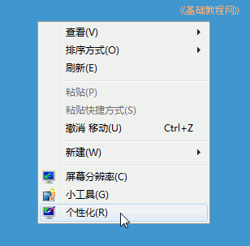
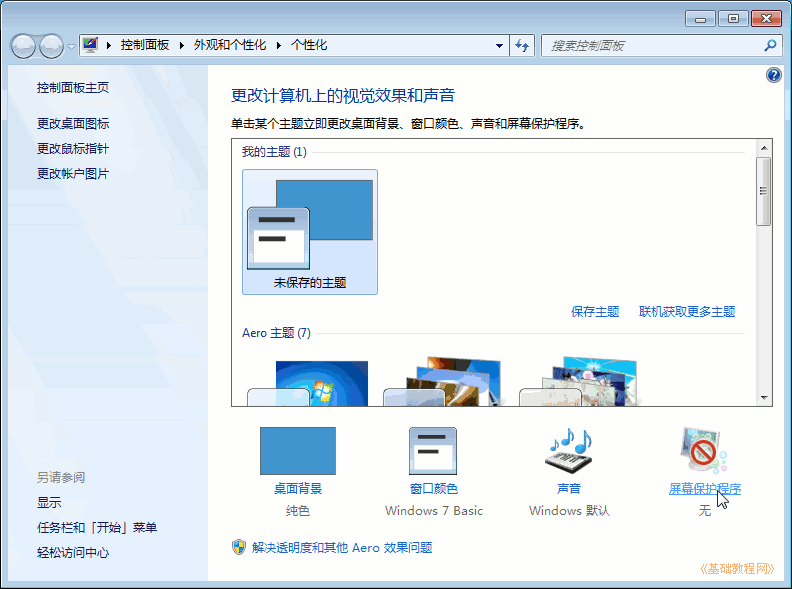
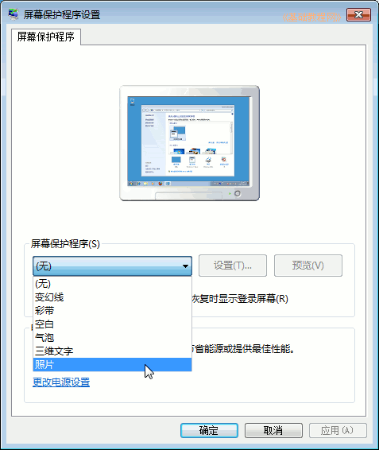
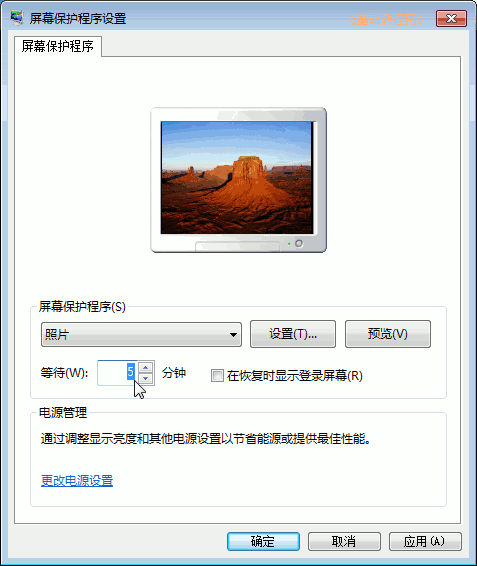
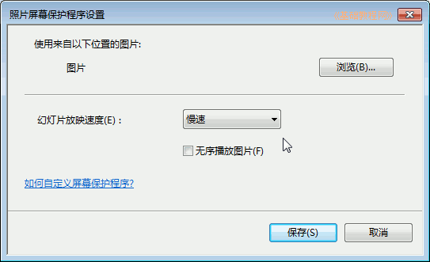
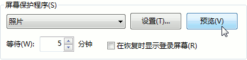
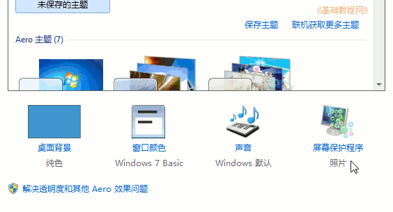

Windows7 基础入门教程
作者：TeliuTe 来源：基础教程网
十一、屏幕保护程序 返回目录 下一课屏幕保护程序，可以在空闲时播放一些屏幕特效，防止长时间显示单一画面；
1、设置屏幕保护程序
1）在桌面空白处点右键，选择“个性化”菜单；

2）在出来的主题背景中间，找到“屏幕保护程序”图标，点击进入；

3）点击中间的下拉按钮，选择一个屏幕保护程序，上边的屏幕中显示预览图像；

4）在下边的“等待”中，设定空闲的时间；

5）点旁边的“设置”按钮，可以进行一些细节方面的设定；

6）点右边的“预览”可以立即进入屏幕保护模式，再动一下鼠标又返回；

7）设定完成后，点下边的“保存”完成屏幕保护设定；

本节学习了设置屏幕保护程序的基础知识，如果你成功地完成了练习，请继续学习下一课内容；
本教程由86团学校TeliuTe制作|著作权所有
基础教程网：>http://teliute.org/
美丽的校园……
转载和引用本站内容，请保留版权信息和本站链接。